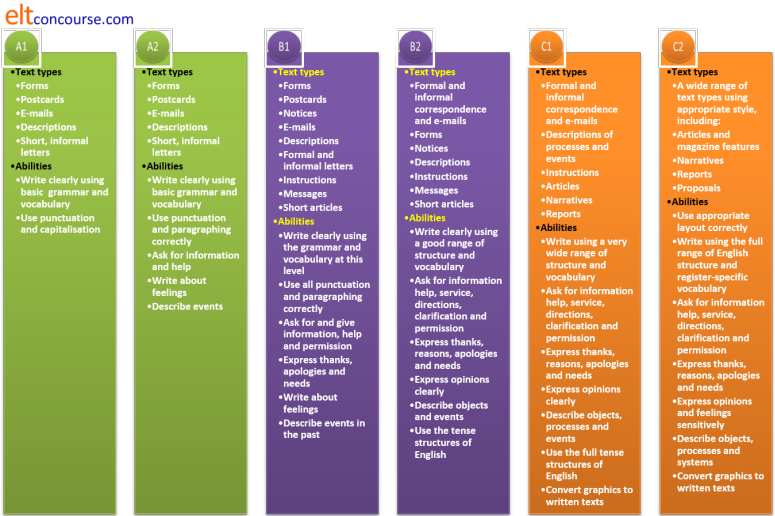
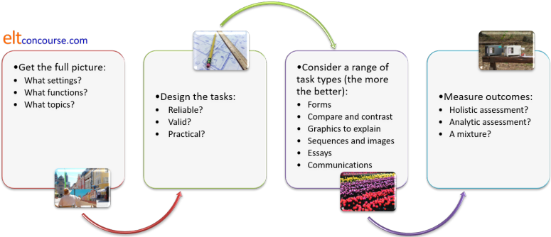

Assessing writing skills

In this guide, two approaches to testing writing are considered (and they are often combined):
- It is often assumed that the best way to test writing ability is to get the learners to write. That may seem obvious but, particularly at lower levels, being asked to write a whole, properly staged and formed text from scratch is a daunting and challenging task which may demotivate and depress our learners. The other issue is that reliably evaluating our learners' ability with a malformed, disorganised and inaccurately written text as the only data source is almost impossible.
- A less forbidding and more reliable and practical approach
is often to employ indirect tests which can be used to
assess the underlying skills individually.
For example, separately testing the learners' ability to use conjunction, sequencers, pronomial referencing and so on can provide some data about how well (if at all) they may be able to deploy the items in written texts. Equally, we can separate out some of the writing skills which go into making up the holistic skill of writing and test these subskills separately.
Example 1: If one of the target text types our learners will need to produce is a discussion of two sides of an issue (a skill often required in academic settings), then it makes some sense discretely to test the ability to use conjuncts, adjuncts and disjuncts (such as, on the other hand, seen from this angle, equally, however, making matters worse, whereas etc.). The ability to soften a point of view with modal expressions (such as it could be argued, it may be assumed, there is some evidence to suggest etc.) is also a key skill, incidentally.
Example 2: If a key writing skill is to summarise a mass of data in clear prose (as is often required in occupational settings for the production of a summary report on research), then it makes sense to test the learners' ability to identify key information, describe trends and make tentative predictions based on the identified trends.
 |
The aims of the teaching programme |
All assessment starts (or should start) from a consideration of
the aims of instruction.
For example, if the (or one) aim of a language course is to enable
the learners to do well in an IELTS academic writing examination
then this will be very influential in terms of the types of
assessment tasks we use and the way in which we measure performance.
The backwash (or washback, if you prefer) from the examination
format will almost inevitably have to be reflected in the task types
we set.
If, on the other hand, our aim is to enable the learners to operate
successfully in a work environment then we will set different kinds
of assessment tasks and measure performance against different
criteria. In this case, a priority will be to measure how
accurately and with how much communicative success the learners can
handle the specific register and functions required by their work
context.
Finally, if we are aiming at enabling our learners to function
adequately in an English-speaking environment (perhaps as an
immigrant or temporary resident), then this, too, will fundamentally
affect the tasks we set and the benchmarks against which we measure
success. Here, for example, we might be dealing with
form
filling, work getting and accessing services.
There are, however, some underlying principles in the area which are generally applicable regardless of the aims of the teaching programme.
 |
Three basic tenets |
- We have to use assessment tasks which properly reflect the kinds of writing tasks the learners will need to be able to do in 'the real world'.
- We need to design tasks which accurately show the learners' ability.
- We need to have a reliable way to score the learners' performance.
These three factors are to do with ensuring reliability and
validity. For more on those two concepts, see
the guide to testing, assessment and evaluation.
The rest of this guide assumes basic familiarity with the content of
that guide.
Fulfilling all three criteria adequately requires a little care.
 |
Getting the full picture |
The first step is to set out exactly what writing skills are the objects of the teaching programme. To do this, we have to answer these 4 questions (which come with a few examples of the kinds of answers we might get):
- What sorts of texts will our learners need to be able to
produce? I.e., in which genre(s) will they need to
function?
- Emails / letters (formal or informal, interactional or transactional)?
- Blogs?
- Notes?
- Form filling?
- Announcements?
- Advertisements?
- Narratives?
- Academic essays? In which subject areas?
- Descriptions?
- What are the purposes of the learners' writing?
- For basic communication with colleagues?
- For academic purposes?
- For social purposes in an English-speaking setting?
- For informal or formal interpersonal communication?
- What functions do the learners need to be able to perform?
- Expressing needs?
- Stating opinion?
- Apologising?
- Providing information?
- Eliciting information?
- Sequencing events?
- Commenting on opinions?
- What topics will our learners have to be familiar with?
- Social matters?
- Dealing with officialdom?
- Service providers?
- Entertainment and leisure?
- Travel arrangements?
- The media?
- Personal anecdotes?
- Medical matters?
- Specific study subjects?
- Specific occupational areas?
 |
Identifying text types |
The first step is to find out what sorts of texts the learners
will need to be able to produce. This is by no means an easy undertaking,
especially if the course is one in General English (also known as ENAP
[English for No Apparent Purpose]) when it is almost impossible to
predict what sorts of texts, for what purposes the learners may one
day need to write.
On courses for more specific purposes, such as in-company teaching
or examination preparation, it is easier to identify the
sorts of texts the learners will write and the purposes to which
they will put them. For example, if the writing the learners
will need to produce is confined to occupational purposes, it is
less likely that the ability to write a narrative, an exposition or
a discussion but the ability to write a recount (as a report), and
information report, a procedure and an explanation may all be
important.
Before we can begin to assess our learners' writing skills, therefore, it is important to define precisely what genre(s) they need to be able to handle. There is very little point in, for example, testing the learners' ability to write a narrative if they are never going to be asked to write one.
The following is a short list of the main genre types. The right-hand column contains some indication of the structural components which are likely to be needed to produce each text type. These will be the targets of any indirect testing that is done. For example, if one of the target genres for our learners is the ability to write an information report, we may like separately to test the ability to handle relational verbal processes, tense markers, causal conjuncts, exemplification, graphical representations of data and so on.
| Genre or text type | Is often staged ... | Examples include | Containing |
| RECOUNT | Orientation > Record of events > Reorientation > Coda | an anecdote, an excuse for being late, a funny thing happened to me on the way to ... | Time and tense markers, circumstances (when, who with, where etc.), material and behavioural verbal processes |
| NARRATIVE | Orientation > Complication > Resolution > Coda | a novel, a short story, fables, parables, jokes | Time and tense markers, circumstances (when, who with, where etc.), material and behavioural verbal processes |
| PROCEDURE | Goal > Materials > Sequence of steps | recipes, manuals, maintenance instructions | Behavioural verb imperatives, lists of nouns, quantifiers and adverbials of manner |
| INFORMATION REPORT | General statement > Description (ordered information by sub-topic) | encyclopedia entries, text book sections, reports of experiments/studies | Relational verbal processes, tense markers, causal conjuncts, exemplification, graphical representations of data |
| EXPLANATION | Identifying statement > Explanation of stages of a process | web pages like this, explaining processes | Material verbal processes, circumstances of time and place, sequential markers, passive forms |
| EXPOSITION | Statement of position > Preview of arguments > Arguments + evidence as examples > Reinforcement of position | political pamphlets, leader columns in papers, letter to the editor | Modal auxiliary verbs of obligation and advice, attitudinal or content disjuncts, material and behavioural processes, future forms |
| DISCUSSION | Issue > Arguments for > Arguments (reversed or combined > Optional statement of position | academic texts, student essays, histories | Passive forms, modal auxiliary verbs of possibility / likelihood, behavioural and material processes, circumstances of place |
When we have done some analysis of the structure and likely
language content of the typical texts certain learners need to
write, we can design discrete-item, indirect tests of their ability
to get the staging and linguistic content of the texts right before
we test the ability to put it all together and write a full text.
If any of the above mystifies, try:
| the guide to genre | which is an overview of the area and considers the seven text types identified above |
| the guide to circumstances | which considers how verbal processes are modified |
| the guide to verbal process | which considers the kinds of events and states that verbs encode |
| the general guide to assessment and evaluation | which focuses on reliability, practicality and validity among much else concerning test design |
 |
A general writing-skills check-list |
It may be the case that you find yourself teaching General
English rather than English for Specific Purposes (also known as
ENAP [English for No Apparent Purpose]). If that is so, you
need a general-purpose check-list of abilities at various levels
against which to assess your learners' abilities to write.
Here's one:

The abilities and text types are, of course, cumulative.
At, e.g., B2 level, a learner should be able to handle everything
from A1 to B1 already.
 |
Designing tasks |
Now we know what sorts of thing we want to assess, the purposes
of the writing, the functions the learners need to be able to
perform and the topics they need to deal with (i.e., the register), we can get on and
design some assessment procedures.
Again, there are some generic guidelines for all tasks, whatever the
answers to the 4 questions above are.
If you have followed the guide to testing, assessment and evaluation
(see above), you will know that this is something of a balancing act
because there are three main issues to contend with.
- Reliability:

A reliable test is one which will produce the same result if it is administered again (and again). In other words, it is not affected by the learner' mood, level of tiredness, attitude etc.
We can, of course, set a single mega-task and get the learners to write for hours to complete it but we risk losing reliability. If any or some of the learners find the topic unappealing, the task too daunting or the content irrelevant to them, they will almost certainly perform below their potential.
To ensure that a writing test is reliable, then, we need to set as many tasks as we can over a period of days or even weeks.
This will mean that even if a particular learner in the test group is feeling glum and demotivated when presented with one task, the results will even out over the whole assessment.
It also means that if a particular task is unappealing to some of the learners for whatever reason, other tasks will appeal more and balance the results.
The type of marking that is required also plays a role here: the more subjective the marking is, the less reliable will be the test.
As a general rule, tests which ask the learners to write in full the sorts of text that form the target of the teaching programme will be less reliable and more difficult to evaluate than those which break down the skill and test discrete parts of it separately. - Validity:

Three questions here:- Does the test measure what we say it measures?
For example, if we set out to test someone's ability to construct a discussion text for academic purposes, do the test items we use actually test that ability or something else?
Again, as a general rule, testing the whole skill, rather than breaking it down will result in greater validity, at the expense of some reliability. - Does the test contain a relevant and representative sample
of what it is testing?
For example, if we are testing someone's ability to write a formal email, does the task we set get them to deploy the sorts of language they actually need to do that? - Do we have enough tasks to target all the skills we want
to teach?
For example, if we want to test the ability to summarise information, provide information and elicit information, do we have tasks focused explicitly and discretely on each area?
- Does the test measure what we say it measures?
- Practicality:

Against the two main factors, we have to balance practicality.
It may be advisable to set as many different tasks as possible to ensure reliability and to try to measure as many of the skills as possible in the same assessment procedure to ensure validity but in the real world, time is often limited and concentration spans are not infinite.
Practicality applies to both learners and assessors:- for learners, the issue is often one of test fatigue.
Too many tests over too short a time may result in learners losing commitment to the process.
On shorter courses, in particular, testing too much can be perceived as a waste of learning time. - for the assessors, too many open-ended test tasks which need careful marking may put an impractical load on time and resources. This may be compounded by task types which require subjective judgements in marking. Assessors may become tired and unreliable markers.
- for learners, the issue is often one of test fatigue.
 |
Examples may help |
Say we have a short (150-hour) course for motivated B2-level
learners who need to read and understand technical data concerned
with the automobile industry, write emails to clients and summaries
of technical documents for their company. Halfway through the
course, we want to use an assessment procedure to measure the
abilities to do this so far acquired and plan a way forward for the
rest of the course.
We have around three hours of the course earmarked for this
assessment.
What sorts of items could we include, bearing in mind reliability,
validity and practicality?
Evaluate the following ideas, based on these principles and then
click on the
 to reveal some comments.
to reveal some comments.
|
Give the group a long, technical email from a client containing six technical questions and get them to:
|
Negatively:
On the positive side:
|
|
Negatively:
On the positive side:
|
Getting the learners to research an area of specialism,
select a text from a technical source and:
|
Negatively:
On the positive side:
|
Designing anything in life involves striking a balance between competing priorities.
The kind of evaluative thinking that you have used here can be applied to any kind of assessment procedure, regardless of topic, level and task types.
 |
Other assessment task types |
It may be that your circumstances allow for very simple writing
tasks such as those requiring the learners to write an e-mail
explaining a set of given factors, an essay discussing pros and cons
or one advocating a point of view. Those are all legitimate
tasks providing the task type and content suits the purposes of
assessment.
There are other ways.
No list can be complete, but here are some other ideas for other
ways to set writing tasks for assessment purposes. The
content of any task will of course, depend on all the factors
discussed so far.
- Form filling tasks
These are often used at lower levels because they can be carefully directed and constrained. However, as you will know if you have applied for a passport, they can also require high-level written language skills and precise comprehension of rubrics and instructions. - Compare and contrast tasks
Presenting people with two different but similar pictures can be a useful way of testing the ability to compare and contrast things in writing.

- Charts and tables
Getting people to transfer data from charts and tables is a useful way to test the ability to describe trends and locate and highlight significant factors. - Simple graphics and picture sequences
Images of events are useful ways of testing the ability to describe and/or speculate in writing.
Series of related pictures (a picture story) can be used to assess the ability to construct a convincing recount. - How to ... stimuli

Requiring people to explain in writing how something is done or how something happens is a good way to test the ability to sequence an instruction or to explain and describe processes. They need to have the data to do this and that can be provided in the form of pictorial steps (such as one finds in operating manuals) and, providing the technology is to hand, via a video demonstration. There are plenty on YouTube. - Free writing tasks

In these tasks, the subjects are provided with a topic, or choice of topic, and a word limit. They write in class or elsewhere and the results are graded according to some prearranged criteria (see below).
The main issue here is that the freer the task, the easier it is for writers to avoid tricky grammar, structure and lexis. It is, in other words, error avoiding and more difficult to assess because of that.
A solution is to guide the task in some way, demanding, for example, that the writer includes a range of data or a set of points. In that way, the test becomes fairer and arguably more valid and reliable, too.
 |
Measuring outcomesIf you can't measure it,
you can't improve it |
Unless you have a clear way of measuring outcomes, all the work on assessment task design is wasted. Ways of getting clean data are discussed in the guide to assessment in general. For writing in particular, however, there are some conventional approaches which fall into two broad categories.
- holistic assessment
- This involves a simple scale, perhaps from 1 to 10, on which
the product from each learner is placed on an impression of how
well they achieved the task(s).
With a small group and with assessors who have a clear idea of what they are looking for, it can be quick, reasonably accurate and efficient.
There are obvious drawbacks in that judgements can be subjective (so double or even triple marking can be used) and it lacks clear criteria against which learners' performances are being measured. - analytic assessment
- Involves breaking down the tasks and being specific about
the criteria you are using to judge success.
Large-scale examining boards use this approach as a matter of course. For example, the current assessment criteria for the IELTS examination stretch across 10 bands of ability and fall into 4 assessment criteria groups. These are:
Task achievement
Coherence and cohesion
Lexical resource
Grammatical range and accuracy
The detail is available from:
https://takeielts.britishcouncil.org/sites/default/files/IELTS_task_1_Writing_band_descriptors.pdf
Here's an example of one level of achievement (Band 7):
Band Task achievement Coherence and cohesion Lexical resource Grammatical range and accuracy 7 - covers the requirements of the task
- (Academic) presents a clear overview of main trends, differences or stages
- (General Training) presents a clear purpose, with the tone consistent and appropriate
- clearly presents and highlights key features/bullet points but could be more fully extended
- logically organises information and ideas; there is clear progression throughout
- uses a range of cohesive devices appropriately although there may be some under-/over-use
- uses a sufficient range of vocabulary to allow some flexibility and precision
- uses less common lexical items with some awareness of style and collocation
- may produce occasional errors in word choice, spelling and/or word formation
- uses a variety of complex structures
- produces frequent error-free sentences
- has good control of grammar and punctuation but may make a few errors
Taking a ready-made set of criteria from a public
examination body like this can be very helpful. They are
written by experts and have been trialled and re-trialled numerous
times. However, you are probably not setting an examination,
you are constructing an achievement test of some kind so the
criteria categories and what they contain may only be marginally
relevant to you (unless, of course, you are preparing learners
actually to take the IELTS examination).
Other sets of criteria from sources with different concerns may
include, for example, communicative quality, effect on the reader,
argumentation, appropriacy and so on.
Each of the category areas can, of course, be weighted (by, for
example, doubling the scores for some areas or multiplying by
another factor) to reflect what you and the learners see as the most
important skills.
The categories you need will be determined by the aims of your
teaching programme and no set of off-the-peg criteria will suit all
purposes.
The summary

| Related guides | |
| assessing reading | for the guide |
| assessing speaking | for the guide |
| assessing listening | for the guide |
| assessment in general | for the general guide |
| the in-service skills index | for associated guides |